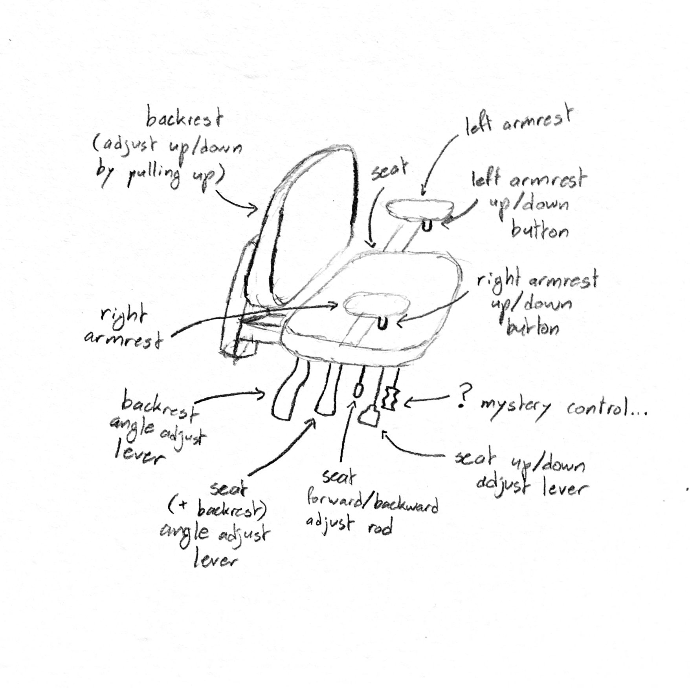
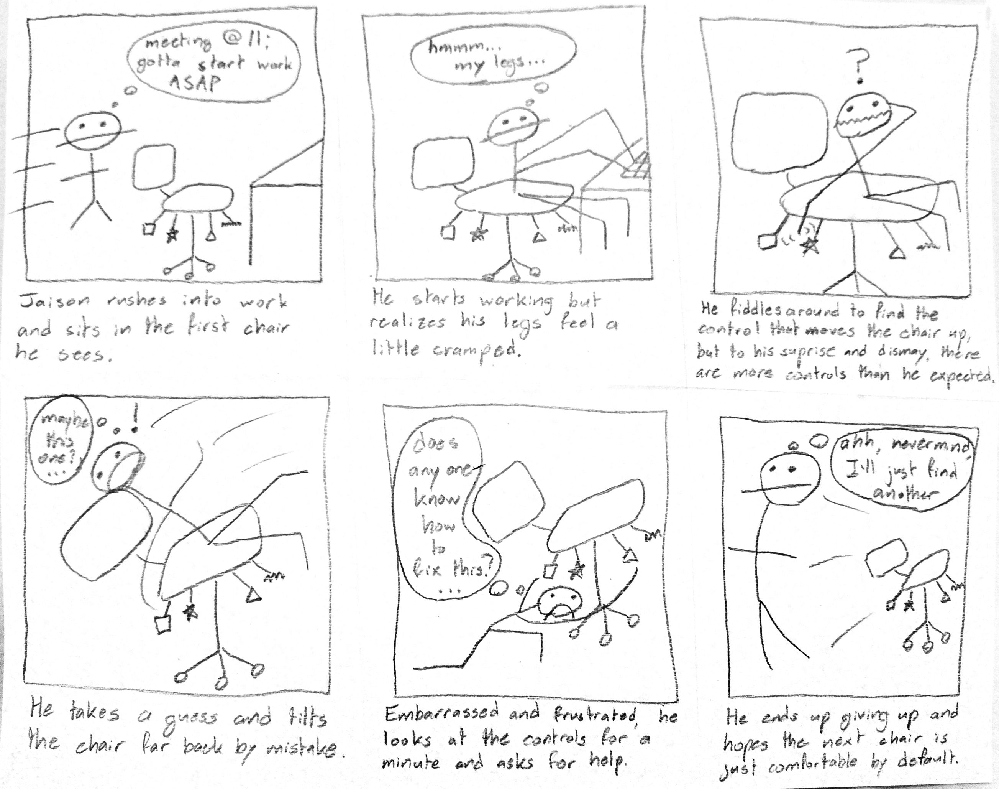

CS1300 HW1: Personas + Storyboarding
Description
The interface I chose to interrogate was the set of controls for the complicated swivel chairs in the SunLab. This interface is trying to solve the problem of users wanting to adjust the chair to their liking, likely to find the most comfortable position. The interface consists of seven or eight controls that move the seat, backrest, and armrests (or more specifically, most of these controls unlock a certain part of the chair to be moved by shifting your weight around and then need to be locked again to set that new position in place).

Interviews
The following is the script I followed when conducting interviews. Beneath each question is a summary of answers given by the interviewees.
-
Sit in this chair and just adjust it so that you feel comfortable, as if you were about to start using the computer in front of it. Do you feel comfortable or do you need to adjust it more?
-
All users were able to get to a point fairly quickly where they said they were comfortable.
-
Did you feel like it was easy or difficult to find the perfect spot that was most comfortable?
-
One user said it was difficult because the controls were not intuitive with what they wanted to happen.
-
Other users said it was easy, but since the chair started in a neutral position, note that they did not try adjusting most things to try to find the perfect spot.
-
Which controls did you interact with?
-
One adjusted a few of the levers on the bottom and said they were comfortable.
-
Other users simply adjusted the up down control quickly and said they were comfortable.
-
Were there any controls you didn't interact with?
-
All users said they did not interact with the seat front/back adjust rod or the mystery control.
-
One user said they did not want to interact with the majority of the controls except for the seat up/down adjust level because they only needed to adjust it up and down.
If so, why did you not interact with them?
-
Without looking any closer, do you think there could be other controls you could use to adjust the chair further that you're not aware of?
-
No user felt confident that they were aware of all the possible controls.
-
Now look closer and tell me if you find more controls to interact with.
-
Users at this point would be able to point out all five controls below the seat, but wouldn't be sure how to operate some of them.
-
Now as an experiment, adjust the chair to try to make it as uncomfortable as possible. Try as many possibilities and extremes as you want.
-
At this point users were able to discover how to operate a few more controls, but none could find them all.
-
One user believed the seat forward/backwards adjust rod was a "reset control" that brought the seat and backrest back to a neutral position.
-
Some users thought the seat forward/backwards adjust rod needed to be twisted, so they couldn't figure out they needed to push in or pull out that rod to adjust the chair.
-
Some users found controls used to disassemble the chair at this point and thought they could be used to adjust the chair position, but in this case they thought it possible that they might be disassembling the chair and for fear of that they would stop using that control.
-
All users conjectured that one of the controls might be used to lock all of the other controls in place, but note that this chair does not have a control that does that.
-
Now feel free to return the chair to a comfortable position.
-
One user could not figure out how to return the chair to a comfortable position (mostly because they could not undo the unlocked default position of the seat+backrest angle adjust lever which tilts those parts way far forward).
-
When you were adjusting the chair, were there any controls that didn't do what you expected or moved in an unintuitive way?
-
From observation, I noticed all users were shocked when the chair flung forward when they unlocked the seat+backrest angle adjust level.
-
Some users mentioned that the pictures seldom clearly explained what each function did, and some pictures were hard to see because they were placed right below the seat or had no picture at all.
-
One user said they expected the seat up/down adjust lever to be more prominent because that is the most common control for all chairs.
-
Of course no user (nor I) was able to figure out how the mystery control affected the chair.
-
Do you feel like the controls allowed you too much freedom or were they too restrictive?
-
Some users said they were neither too restrictive nor allowed too much freedom.
-
One user confidently said there was too much freedom (except for the one aspect that they could not use the seat up/down adjust lever to go as far down as they wanted). They continued to say that many of the controls were unnecessary and "nobody would want to do that."
-
Compare this chair's controls to other chairs you've adjusted. Was everything exactly the same as you're used to or different?
-
All users said the seat up/down lever was the same as other chairs, but everything else was different.
-
Some users said that other than the up/down control, chairs usually only might have a seat+backrest angle control, but not one that works in the same way as this one.
-
Was there anything positive or negative that surprised you about this chair's controls?
-
Some users were positively surprised that the armrests were adjustable up and down (but most did not notice this was possible until I pointed it out).
-
All users were negatively surprised that taking the actions to manipulate some controls was more difficult than expected (for instance, a large amount of effort is required to shift your weight to push the chair backwards when the seat+backrest angle adjust control was unlocked).
-
Was there anything that you particularly enjoyed about this chair's controls?
Was there anything you think should be improved?
If you have any ideas, how do you think you might improve those aspects of the controls?
-
One user said the controls were hard to figure out and unnecessarily hard to access and control. They said that if they were to use this chair intending to sit in it for a long time and wanted it to be perfectly comfortable, they could adjust it before they sat down rather than having the controls be designed to be accessed when you are already sitting in the chair.
-
One user said the biggest problem with the chair was that there were too many unnecessary controls and the best way to improve that would be to remove most of the controls.
-
One user said they liked the large range of controls and the freedom they each give separately, but they were unintuitive.
-
Is there anything else on your mind about this chair's controls you didn't get a chance to tell me?
-
At this point, interviewees mostly just summarized their previous thoughts.
Overall takeaways:
-
When first confronted with the chair, users were able to get it to a comfortable position (but note the chair was in a neutral position to start). Before experimenting and looking closer, users were confident that they were not aware of all the possible controls.
-
Even after experimenting, no user was able to find all controls, much less be able to correctly identify the actual function of all the controls. No user was able to find the control for moving the backrest of the chair up and down. No user was able to figure out how to use the seat forward/backward adjustment rod.
-
Some users appreciated having many controls to freely adjust the chair and others disliked having such a complicated control scheme.
-
Users concurred that many of the controls were unintuitive and their mental model did not match with the physical model of the chair controls. They struggled to find the actions they could take that would bring them to their goal, and in some cases even if they could find the action to take, they struggled to actually perform the action.
Personas
Christa:
Christa is an active, health-conscious 30-year-old software engineer who is sitting at her job typing for 8 hours a day. She is always aware of her posture and is very particular about her seated working position in order to be comfortable while having optimal sitting hygiene. She works at a shared office with no assigned seats, so the chair she chooses to sit in always needs to be adjusted to her exact liking before she can work. She needs the interface of the chair's adjustment controls to be precise for her exact posture goals and easy to manipulate since she has to go through the process of adjusting them every morning.
Thinks
-
Wow the person sitting in this chair before me is insane; I can't believe they left it like this
-
I wish there were a way to move the armrests so my elbows could be at 90° angles…
-
Wait, has this lever always been here?!
Feels
-
Irritated when she overcorrects her adjust past the perfect point
-
Uncomfortable because she sat in the same place for 4 hours but her knees were scrunched more than she would've liked
-
Confused because she was sure the last chair she sat in could go lower than this…
Says
-
"Do you know if there's a way to change the angle of the backrest but keep the seat the same?"
-
"Sorry I need to take a walk, my back is killing me because I couldn't get the lumbar support right"
-
"I'm gonna take a quick break but please don't touch my chair, I just finally got it in the perfect spot"
Does
-
Spends a good six minutes adjusting the height of her chair so the angle of her neck is just right looking at her computer
-
Investigates the bottom of her chair to figure out if there's any controls she didn't notice
-
Accidentally dissasembles the chair when manipulating a control she hadn't tried before
Jaison:
Jaison is a middle-aged business man who likes filling up his day with different appointments and working in a variety of places. He will usually not stay sitting in one place before he needs to get up to attend to something elsewhere. All he requires of the chair he sits in is that it be fairly comfortable, broadly defined, but he does expect this requirement to be met in any chair he sits in by default, or maybe with very few adjustments on his part.
Thinks
-
How long can I sit here before I need to leave for my 3 o'clock meeting?
-
This desk is too high; I just need to lower the seat a bit…
-
Why does this chair have so many controls? I can't figure out which one I need to use
Feels
-
Ready to get started on his work as soon as possible
-
Confused why the chair he's sitting in is tilting so far back
-
Embarrassed that he isn't able to get the chair in a normal position
Says
-
"Is there a way to stop the chair from tilting so far back? I've never had this problem before"
-
"Do you know which lever moves the seat up and down? I just want to lower it a little"
-
"I don't have time for this; I'll just sit somewhere else"
Does
-
Fiddles with a few controls that make the chair's position a lot worse on accident
-
Gives up and hopes the next chair he sits in is just in a neutral position
-
Develops a subconscious aversion to desk chairs and starts to prefer sofas
Storyboard
